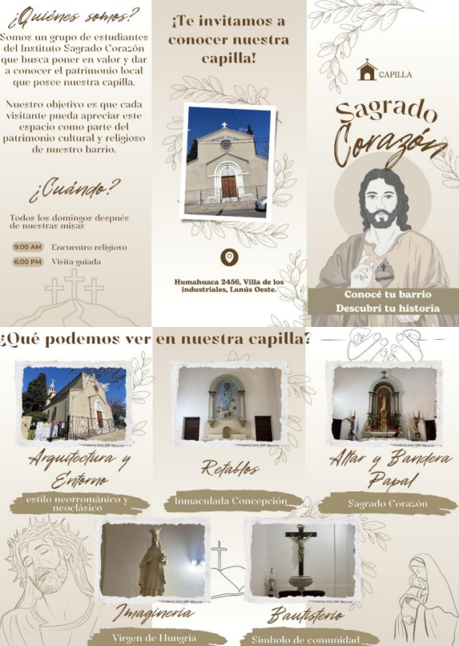
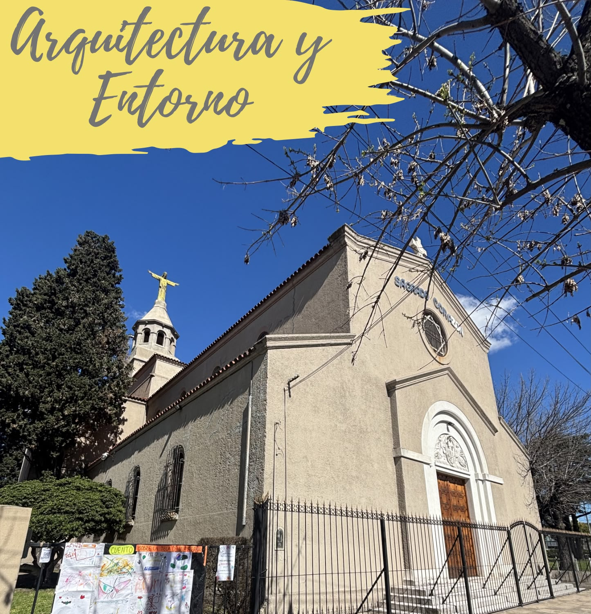
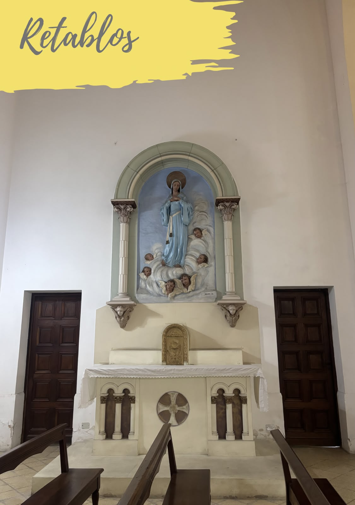
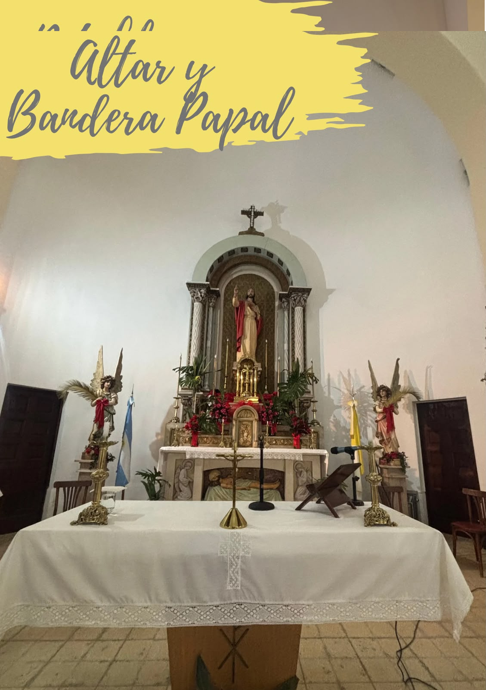
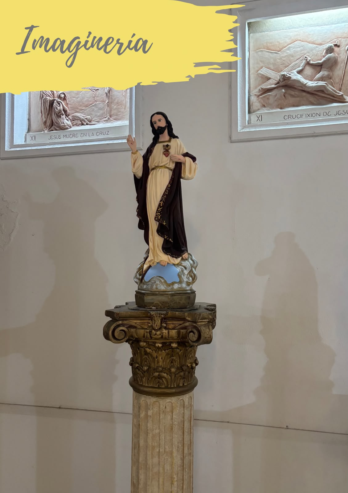
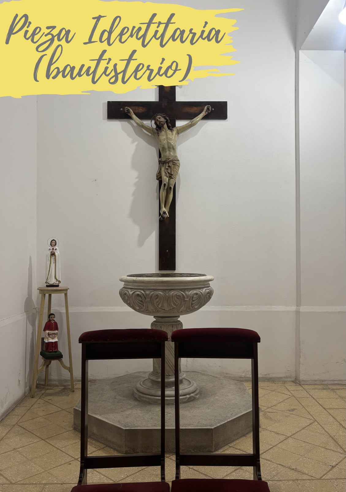

Revalorización
Del patrimonio artístico, histórico, escultórico y cultural de las iglesias. Dar a conocer estos atractivos al público les otorga la importancia y visibilidad que estos templos se merecen.
Aunque mi única misión es cuidarte toda la vida.
Te amo <3
Del patrimonio artístico, histórico, escultórico y cultural de las iglesias. Dar a conocer estos atractivos al público les otorga la importancia y visibilidad que estos templos se merecen.
De las habilidades comunicativas de los alumnos, ayudándolos a afrontar problemas comunes en la adolescencia, como la timidez y la ansiedad, mientras se forman bajo los ideales de la conciencia ética y cristiana.
Del vínculo entre la escuela, la capilla y el barrio. Que alumnos, familias y vecinos se encuentren en torno a un patrimonio compartido y construyan una identidad comunitaria.
Estudio realizado por la Universidad Católica Argentina (UCA)
La ansiedad social entonces es, en definitiva, un problema presente en la adolescencia. Y dado que la idea del proyecto es que está hecho por y para los alumnos, buscando que estos se vean beneficiados y puedan afrontar todos aquellos problemas que se presenten en esta etapa de la vida, por lo que será responsabilidad de sus docentes, identificar a aquellos alumnos que muestran interés en formar parte del proyecto pero que presenten dificultad a la hora de comunicarse o signos de lo que se conoce como “pánico escénico”, y otorgarles diversas herramientas para combatir sus temores con una exposición gradual, que podría comenzar, por ejemplo, con el alumno entregando folletos en la entrada de la iglesia, haciendo así que interactúe con un público de una manera no tan directa.
Ya resuelto el mayor conflicto a la hora de realizar este trabajo, se detallará por fases la elaboración del mismo.
Tres fases para llevar el modelo a cualquier capilla escolar.
Dado que este recorrido es de carácter escolar, es de suma importancia la preparación previa de los alumnos para poder llevar a cabo el circuito de manera integra y segura, para ello, se incorporará un pequeño taller de confección de visitas guiadas al plan de estudio. Dicho taller tendrá una duración total de 6 horas divididas en 6 clases dictadas por los profesores de las materias de catequesis, historia y prácticas de lenguaje.
| Clase | Prácticas del Lenguaje | Catequesis | Historia |
|---|---|---|---|
| Clase 1 “Técnicas de investigación y resumen” | ✕ | ||
| Clase 2 “Elementos comunes en iglesias” | ✕ | ||
| Clase 3 “Historia de la capilla de la institución” | ✕ | ||
| Clase 4 “Comunicación no verbal y técnicas de presentación” | ✕ | ||
| Clase 5 “Relevamiento de la capilla” | ✕ | ||
| Clase 6 “Prueba piloto” | ✕ |
Durante el taller, los alumnos interesados en formar parte del proyecto deberán encargarse de confeccionar los discursos que presentarán en cada parada de las visitas guiadas, los cuales deberán indicar el nombre de la obra de arte, una breve reseña histórica y su importancia en las escuelas católicas. Si bien podrán decidir qué decir, se les indicará en qué puntos estratégicos parar de acuerdo con el modelo de este proyecto.
Otra actividad que los alumnos deberán realizar será la creación de folletos “turísticos” que destaquen, en orden, las diversas paradas del circuito, junto con una pequeña descripción de cada una e imágenes ilustrativas. El propósito es transmitirles a los visitantes una imagen clara e informativa de los atractivos dentro de la capilla para que puedan guiarse mejor durante el recorrido.

El circuito consistirá en una visita guiada y organizada de manera voluntaria por alumnos de nivel secundario de entre 15 y 18 años, organizada en torno a cinco paradas estratégicas, donde cuatro de estas podrán encontrarse en cualquier iglesia, y dejando una para destacar la singularidad de la capilla en la que se esté llevando a cabo el recorrido. Su naturaleza voluntaria permite que el recorrido esté dado por aquellos interesados en desarrollar su oratoria y aprender sobre la historia de su entorno, mientras que la elección de edad para realizarlo permite que la visita se vea acompañada por la madurez cognitiva y herramientas necesarias para llevar adelante el proyecto.
Saludo general e inicio del recorrido Dar una breve reseña histórica de la institución y su iglesia (año de ignauguración y arquitecto), y detallar los aspectos arquitectónicos de la misma

Ejemplo de atractivo del circuitoExplicar funcioniento de los mismos, sabiendo que son una gran estructura ornamental que combina arquitectura, escultura y pintura

Ejemplo de atractivo del circuitoDetallar las celebraciones y procedimientos que se realizan en el altar principal, como la celebración eucarística, el signo de Cristo, las ofrendas y su función como banquete sagrado. En cuanto a la bandera papal, argumentar su importancia dentro de la escolaridad católica y su papel tanto en los actos escolares como en algunos encuentros religiosos.

Ejemplo de atractivo del circuitoMostrar las distintas representaciones de la divinidad dentro de cualquier iglesia, usando ejemplos en obras, pinturas y esculturas dentro de la capilla.

Ejemplo de atractivo del circuitoElegir una pintura o escultura que represente a la iglesia como un espacio único donde se forma una comunidad devota a Cristo y sus enseñanzas. Explicar su función y el por qué fue elegida para formar parte del circuito. Cerrar la visita con agradecimientos al público.

Ejemplo de atractivo del circuitoPresupuesto mensual estimado para la capilla.
| Rubro | Detalle | Monto mensual |
|---|---|---|
| Papelería | Impresión de folletos | $ no sé |
| Desayuno | Para los alumnos | $ no sé xd x2 |
| Total mensual estimado | $ no sé xd xd x3 | |
Contactanos (aunque no me gusta este texto y este título AAAAA TE AMO)